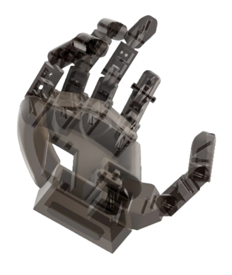
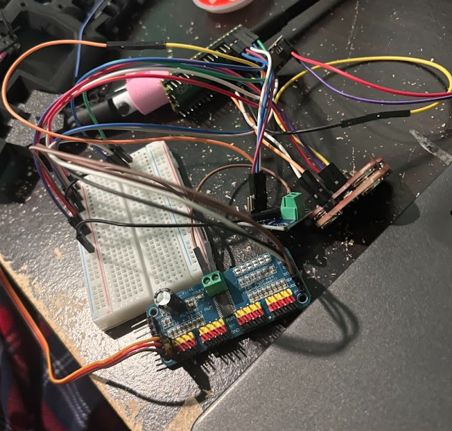
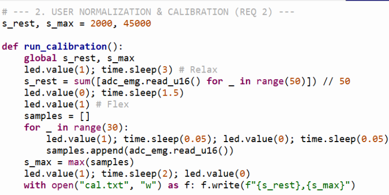
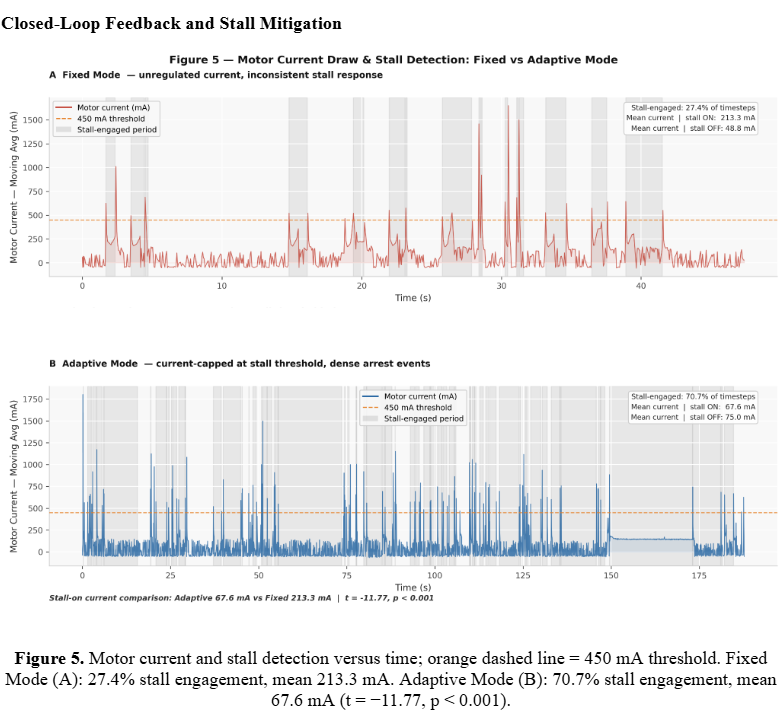
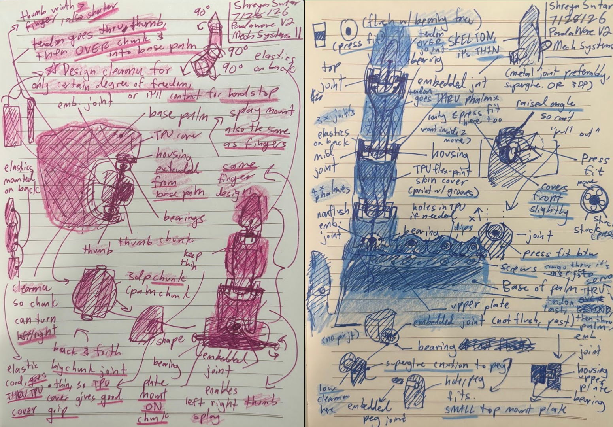
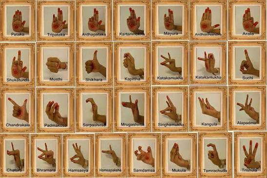

[ 01 ]
Biomedical · Embedded Systems
PandaWare
EMG-controlled myoelectric prosthetic hand, built from scratch.
View ProjectHardware Engineer · Prosthetics Researcher
Rising junior at California Academy of Mathematics and Science, hardware engineer, prosthetics researcher.
I build hardware at the intersection of biomedical engineering and embedded systems, focused on prosthetics and assistive technology, devices that restore function to people who have lost it. Most of what I've made was built without a lab, a mentor, or a budget, which has meant learning why systems fail rather than buying past the problem. Alongside the engineering, I founded and edit ISE, a student research journal, because the writing half of research is the part students are least often taught.
EMG-controlled myoelectric prosthetic hand, built from scratch.
View ProjectAn ISSN-registered student research journal I founded and edit, publishing high school and undergraduate research free of charge. Built the full manuscript infrastructure, recruited faculty reviewers across multiple universities, and now operate it with faculty advising from MIT.
Visit ISELed a prosthetics outreach project bringing assistive technology to a senior living community, directing the CAD, electrical, and programming work and writing the lesson plans that let other students contribute to the build rather than watch it.

EMG-controlled myoelectric prosthetic hand, built from scratch. PandaWare reads forearm surface EMG, classifies muscle activation in real time on an RP2040, and drives five MG996R servos through a tendon-routed finger mechanism printed in PLA+. A current-sensing safety loop on the INA219 detects object contact and halts grip before force becomes damaging. Total build cost: $180, no lab, no machined parts.
Multiple 3D-printed iterations refining geometry for fit, range of motion, and durability across every finger joint.

Integrated servo control, EMG acquisition, and power sensing on a single hand-assembled system.

Adaptive normalization enabling reliable grip detection across varying muscle fatigue and electrode placement.

Real-time current sensing via INA219 limits grip force automatically, preventing damage to objects. Works reliably on rigid objects; degrades on compliant surfaces.

Commercial myoelectric prosthetic hands cost between $20,000 and $100,000. PandaWare was built for $180 using consumer components, a hobbyist 3D printer, and no laboratory access. The performance figures above are the honest measured envelope, including where the system underperforms.
Known limitations: [[FILL: 2–3 sentences on where the system currently fails — e.g. performance under electrode shift, soft vs. rigid object behavior, grip types not yet supported]]
Every version of this hand failed in a specific way before it worked. The failures were more instructive than the successes.
[[FILL: specific failure — e.g. tendon slipped out of the routing channel under load]]
What changed[[FILL: the specific design change made in response]]
[[FILL: specific failure]]
What changed[[FILL: the specific design change made in response]]
[[FILL: specific failure]]
What changed[[FILL: the specific design change made in response]]
[[FILL: specific failure]]
What changed[[FILL: the specific design change made in response]]
The first hand couples the finger joints together, so the fingers curl as a single unit. That's sufficient for grasping and insufficient for anything requiring a specific hand configuration. The second-generation design drives each finger joint independently — three flexor tendons per finger for the MCP, PIP, and DIP joints, with passive spring return in place of antagonistic extensor tendons. The goal is to remove mechanical coupling as a source of positioning error entirely.

How accurately and repeatably can a low-cost tendon-driven hand reach and hold a defined target configuration, and which subsystem limits that precision — the mechanism, the sensing, or the intent decoding? I'm using classical Odissi mudras as the ground-truth pose set, since each mudra is an exactly defined joint-angle configuration that a coupled mechanism physically cannot produce. That makes them a substantially harder benchmark than grasping tasks, and it yields continuous per-joint error data rather than pass/fail on whether an object was picked up.

Every component chosen for a reason. Here's what powers PandaWare.
Chosen over an Arduino Uno because the EMG acquisition loop and the servo control loop need to run without blocking each other, and the RP2040's dual cores made that possible at a $4 price point. The tradeoff is no hardware floating-point unit, which constrains how much signal processing can happen on-device.
Chosen for iteration speed. Being able to change a filter constant and re-run immediately mattered more than raw execution speed during development, since the bottleneck was mechanical settling time rather than compute. [[FILL: optional — note whether you plan to migrate to C for the v2 build and why]]
Surface EMG was the only viable intent signal available without implanted hardware or a lab budget. The core problem it creates is that its output drifts with electrode placement, skin impedance, sweat, and muscle fatigue, which is what drove the custom normalization pipeline below.
Offloads servo timing to dedicated hardware over I²C, freeing the microcontroller to sample EMG continuously rather than interleaving PWM generation with acquisition. Drives all finger servos from two pins.
This is the component the whole grip-safety system depends on, and it was chosen because fingertip force sensors were outside budget. Instead of measuring force directly, the system infers object contact from the spike in servo current draw when a finger stalls against something. It works well on rigid objects and degrades on compliant ones, which is the exact relationship I'm now characterizing formally in a follow-up study.
High-torque metal-gear servos chosen for holding position under load rather than for speed. One servo per finger, driving tendon cables through the printed finger channels. [[FILL: brief note on what the torque requirement actually was and how you determined it]]
Printed in PLA+ on a partially broken consumer printer, which meant designing around inconsistent tolerances rather than assuming them. Wall thickness and pin-joint reinforcement were sized for print reliability, not just for strength.
Tendon routing was chosen because it moves the actuators off the fingers and into the palm, which is the only way to keep finger geometry close to human scale. The cost is friction and slack accumulating along the tendon path, which sets a hard ceiling on positioning precision — the limitation that motivates the second-generation design.
[ Let's Connect ]
Whether you're a researcher, engineer, or just curious — I'd love to talk about hardware, prosthetics, and building things that change lives.